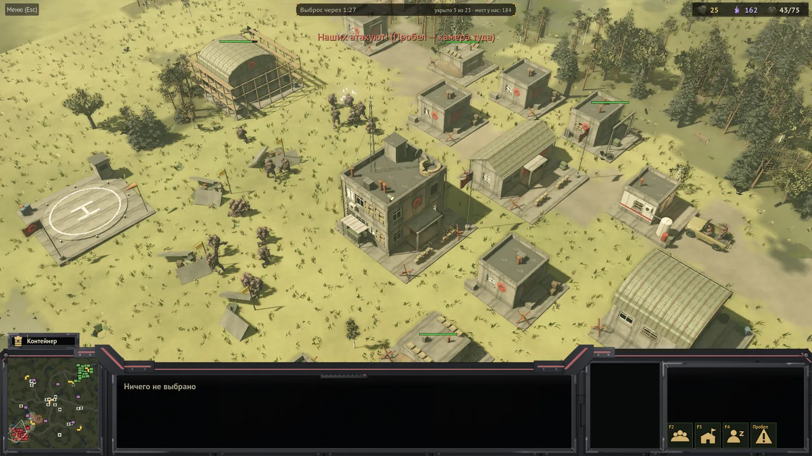
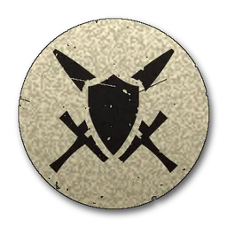
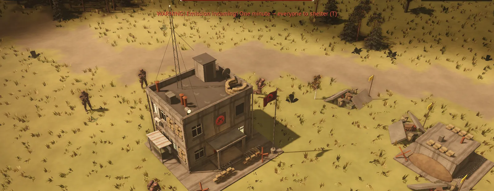

ЗАСЛОН
Barrier
Военные на Периметре. Строй, броня и тяжёлая техника. Их задача — чтобы из Зоны ничего не вышло. В кампании ими командует капитан Громов «Кремень».
Дисциплина: 5+ бойцов рядом получают на 15% меньше урона
Стратегия в реальном времени в Зоне отчуждения. Три фракции, мутанты, артефакты — и Выброс, который сжигает всех, кто не успел в укрытие.

кадр из игрыЗаслон считает Зону заразой. Вольница — даром. Звонари — святыней.
Военные на Периметре. Строй, броня и тяжёлая техника. Их задача — чтобы из Зоны ничего не вышло. В кампании ими командует капитан Громов «Кремень».

Вольные сталкеры со своими законами и своей правдой о Зоне. Быстрые, хозяйственные, бьют из засады. Среди них — Ветер.

Братство, что слышит зов из центра Зоны. Держат склады в Лелёве и НИИ в Копачах, на связь выходят через «Голос из бункера».
Главный враг в игре — сама Зона. Выброс приходит по расписанию, и ради укрытий строят базу не меньше, чем ради казарм. Потяните ползунок.

 за минуту доВыброс
за минуту доВыброс
 После: на открытом месте остался тот, кто не успел. Кадры сняты в демо-версии.
После: на открытом месте остался тот, кто не успел. Кадры сняты в демо-версии.Дитятки, 2013 год. После Выброса пропала связь с блокпостом Заслона. Громов ведёт отряд принять то, что от поста осталось.
Поднять базу у Периметра, пройти болота поймы и свалку, вернуть документы Деда и выйти на след «Резонатора» — того, ради чего Вольница и Звонари лезут в глубь Зоны.
Всё строится на двух ресурсах: хабаре и аномальных фрагментах. Цены — из демо-версии.
У каждой фракции свои здания и своя архитектура: где у Заслона бункер, у Вольницы подвал, у Звонарей крипта. Цены и прочность — из демо-версии.
Бойцы подбирают их у аномалий и складывают в контейнер, а применить можно в любой момент. После каждого Выброса аномалии смещаются — и рождают новые находки. Четыре артефакта редкие.
1 на 1 или 2 на 2 с союзником против компьютера трёх уровней сложности. На карте ПДА видно, где чья база, — щелчок по номеру выбирает ваше место.
Двое игроков друг против друга или вместе против двух компьютеров.
Классика: победа — разрушить базу противника.
Держите точки A, B и C — очки идут за каждую. Точку берут за 20 секунд. Кто первым наберёт 300 очков, тот победил.
Одна точка, раз в 2 минуты переезжает. За 20 секунд до переезда новая точка отмечается на карте. Победа — 250 очков.
Сталкеры отбиваются от мутантов, место отмечено на карте. У вас 2:30: успеете спасти — бойцы присоединятся к отряду. Не успеете — может, спасёт противник, а может, останется только тайник.
Туман сгущается, мутанты беспокоятся. Потом стая идёт на самую слабую базу. Держите бойцов ближе к дому.
Обновление демо: типы партии «Превосходство» и «Опорный пункт», события Зоны — «Сигнал о помощи» и «Гон в тумане», снимки карт в ПДА с выбором места базы, новые текстуры мутантов, оконный режим. Игру делает один человек на Godot, она готовится к Steam.
Новости и рилсы — в Instagram @resonancezone →Пока его нет, геймплей можно посмотреть в рилсах.
Instagram @resonancezone